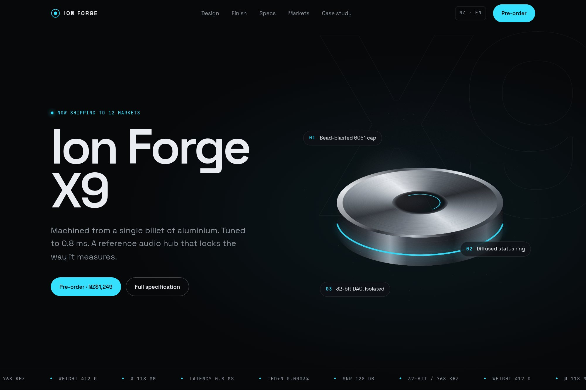

06 — Product launch
From industrial design to kinetic product storytelling.
A hardware launch system carrying industrial design, spec detail and motion in one view, and repeating across twelve markets.

- Type
- Concept · self-directed
- Discipline
- Web · UI · Product
- Deliverables
- Material system, motion tokens, launch ops layer
- Coverage
- 12 regional markets
01The brief
A hardware launch page has to sell the object and its specification at once, then survive translation into twelve regional markets without being rebuilt each time.
The blueprint had to align design, engineering and motion as one delivery, rather than three teams handing work over a wall.
02Design decisions
- A metal material system with defined macro and micro states, so surfaces stay consistent at every crop and scale.
- Motion held in tokens — pulse, scan and hover are declared once and reused, never re-animated per page.
- A localisation layer that separates copy and telemetry overlays from layout, so markets change content without touching structure.
03Outcome
Seventy-four components across eighteen scenes covering twelve markets, with the design and engineering stack — token library, shader set, motion engine, localisation layer — documented as a single delivery blueprint.
A concept project designed in-house by Yonder Tech, not a client engagement. Figures describe the delivered design system, not commercial results.